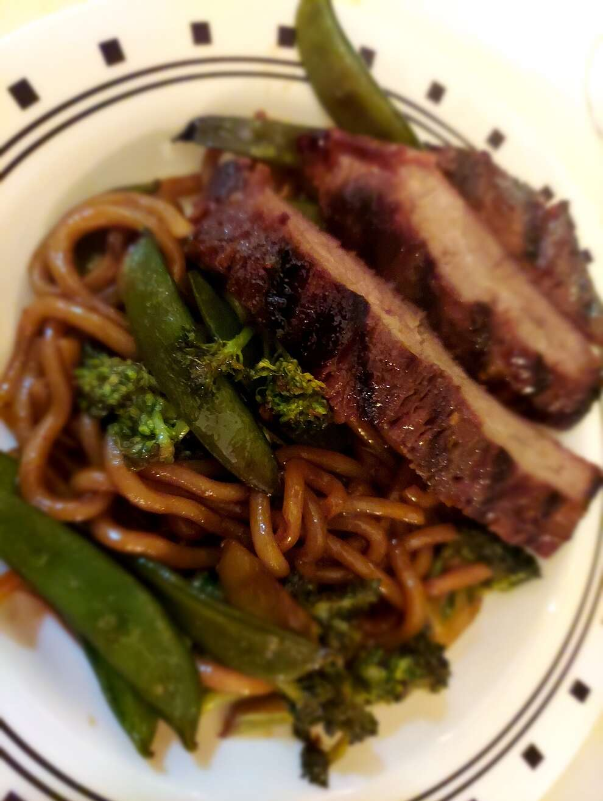

Asian Steak and Noodle Bowl

Description
A delicious combination of Asian flavors infused in lean meat, vegetables, and Japanese noodles.
So comforting, you won't even know this was low-fat!
Ingredients
- ½ cup low-sodium soy sauce
- ⅓ cup vegetable oil
- ⅓ cup brown sugar
- 1 tablespoon minced ginger
- ½ teaspoon garlic powder
- 2 pounds flank steak
- 1 (10 ounce) package dried Japanese udon noodles
- 6 ounces snow peas
- 1 cup broccoli florets
- 1 tablespoon mirin (Japanese sweet wine)
Steps
- Whisk soy sauce, vegetable oil, brown sugar, ginger, and garlic powder together in a large bowl. Pierce flank steak several times with a large fork. Place in the bowl and cover with plastic wrap. Let marinate in the refrigerator, at least 4 hours and up to overnight.
- Bring a large pot of salted water to a boil. Cook udon noodles in boiling water, stirring occasionally, until tender yet firm to the bite, 13 to 14 minutes. Drain.
- Heat a large skillet over high heat. Remove steak from marinade and cook until well-browned, about 2 minutes per side. Reserve marinade.
- Preheat grill for medium heat and lightly oil the grate. Grill steak, basting with half of the reserved marinade, until internal temperature reaches 140 degrees F (60 degrees C) for medium or 150 degrees F (65 degrees C) for medium-well, at least 10 minutes per side. Slice steak thinly against the grain.
- Combine remaining marinade, snow peas, broccoli florets, and mirin in the skillet. Cook and stir over medium-high heat until snow peas are tender, about 2 minutes. Add drained noodles; mix well to combine.
- Divide noodle mixture among large bowls. Top with steak slices.